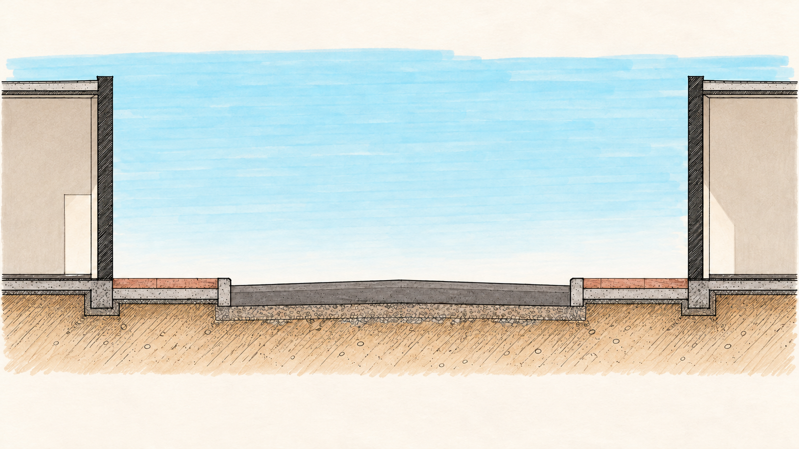

Un corte transversal a plumón, de lado a lado de la calle. Suma una mejora a la vez sobre el mismo dibujo.
Edificios, banquetas y calle en sección. Proporciones aproximadas, sin escala.

La calle antes de sumar propuestas
Sección transversal de estudio. Alturas y anchos aproximados.
Referencia y alcance del estudio
Fotografía P10, banqueta sur de Obregón, frente 21, entre Garmendia y Abasolo. Fecha de captura no confirmada. Se conserva el archivo original del levantamiento público.
El corte y los recortes se generaron con IA con un lenguaje de dibujo arquitectónico de los años noventa y plumones tipo Chartpak. El corte se dibujó desde cero y se ajustó la altura de los edificios. La foto se conserva como referencia separada. Anchos y alturas son proporciones de estudio, no medidas de campo. Los elementos de ambientación se muestran en proyección; las huellas tienen un detalle ampliado. Las piezas se superponen exclusivamente al corte y conservan posiciones fijas para comparar ideas, sin certificar dimensiones, accesibilidad, sombras, drenaje o capacidad energética. No son correcciones al levantamiento.
El diseño de obra requiere medir el tramo completo y revisar accesos, servicios, tránsito y acuerdos. Arte, permisos comerciales y conexiones de seguridad son propuestas, no convenios existentes.
Abrir fotografía original ↗Paleta vegetal de Hermosillo ↗